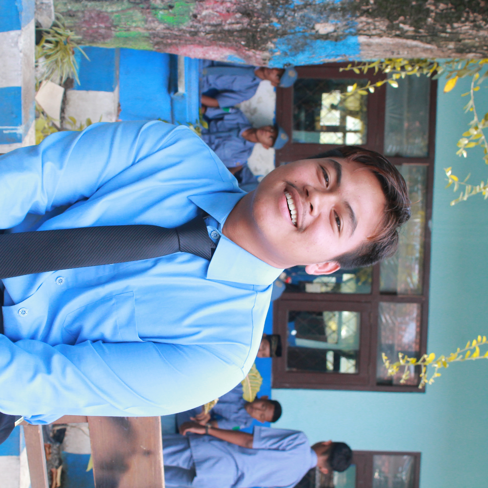

Pak Amar adalah sosok yang begitu dikenal di desanya. Namanya sederhana, namun kebaikan hatinya membuatnya dihormati oleh banyak orang, baik tua maupun muda. Ia bukan orang kaya raya dalam ukuran materi, tapi kekayaan jiwanya menjadikannya salah satu orang paling dermawan yang pernah dikenal masyarakat. Setiap pagi, Pak Amar membuka warung kecil di depan rumahnya. Bukan sekadar tempat jualan, warung itu juga menjadi tempat berbagi. Ia sering membiarkan anak-anak sekolah mampir untuk sekadar sarapan, meski mereka tak selalu membawa uang. “Bayar nanti kalau bisa,” katanya, sambil tersenyum. Tak jarang, ia bahkan memberikan makanan secara cuma-cuma kepada mereka yang benar-benar tak mampu. Bagi Pak Amar, tidak ada kebahagiaan yang lebih besar selain melihat orang lain tidak kelaparan. Tak hanya dalam hal makanan, kebaikan hati Pak Amar juga terlihat saat warga membutuhkan bantuan. Jika ada tetangga yang sakit, ia adalah orang pertama yang datang membantu. Kadang dengan tenaga, kadang dengan uang seadanya. Ia juga aktif membantu pembangunan mushola dan kegiatan sosial di desa, tanpa pernah meminta imbalan atau menyebut-nyebut jasanya. Yang membuat kebaikan Pak Amar terasa istimewa adalah caranya yang tulus. Ia tak suka dipuji, bahkan cenderung menghindar jika disebut sebagai "orang baik". “Saya hanya ingin hidup saya bermanfaat,” ucapnya suatu kali. Ia percaya bahwa setiap rezeki yang datang padanya adalah titipan, dan sebagian harus dikembalikan untuk membantu sesama. Cerita tentang Pak Amar telah menginspirasi banyak orang di desanya untuk ikut berbagi dan peduli. Meski hidupnya sederhana, jejak kebaikannya terus mengalir, seperti mata air yang tak pernah kering. Dalam dunia yang sering diwarnai dengan kepentingan pribadi, Pak Amar hadir sebagai pengingat bahwa kebaikan sejati adalah yang dilakukan tanpa pamrih, dan bahwa menjadi dermawan tak harus menunggu kaya.